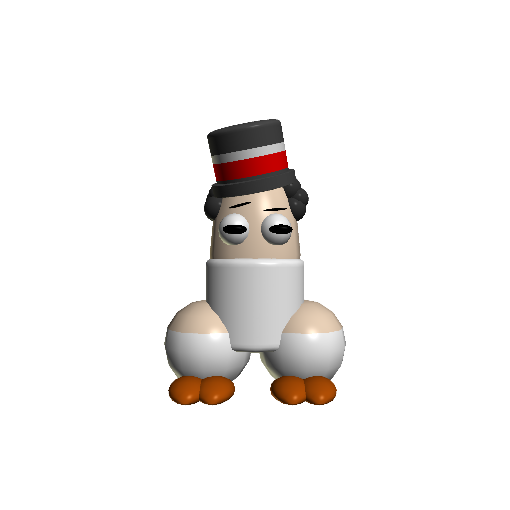
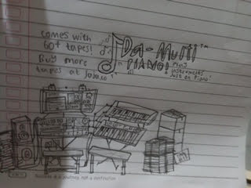

Kreasi Saya
Gambar-gambar saya
Garry

Old.exe

Cap

Idk

Larry

Side eye master

Tree

Anim8or: "Dih man"
Ini adalah sebuah gambar lelucon yang saya buat di Anim8or software pemodelan. Gambar ini seperti lucu dan bisa membuat Anda ketawa! Dia mempunyai baju, celana, sepatu cokelat, topi merah putih hitam, rambut bulat-bulat dan muka.
Da Multi-Piano from Jaja
Sebuah gambar produk yang saya buat di sebuah kertas lembar kosong di sekolah. Saya membuat ini saat waktu pagi di sekolah. Jadi gambar ini menggambarkan sebuah mixer dan 2 piano yang di tumpukkan. Disini Anda dapat memutar piano dan merekamnya ke sebuah kaset rekaman audio, jika Anda beli ini Anda juga akan dapat 60+ kaset rekaman gratis dari produknya sendiri, tapi jika ingin membeli lagi Anda harus membayarnya di toko Jaja (toko produk gambar saya)
Hak Cipta © 2026 AimarWebProject. Dibuat oleh Aimar R.D.